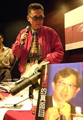
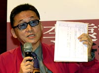

李敖新書「李遠哲的真面目」發表 指明要揭發李遠哲「神化」假象
李敖為新書「李遠哲的真面目」舉行新書發表會時指出，台灣社會對李遠哲的敬愛與寵愛幾近「病態」，而李遠哲什麼都管的結果，是「讓台灣陷入災難」。
記者：溫怡玲 ︱攝影︰湯興漢｜台北 報導∣09月05日 12:36
新黨前總統參選人李敖為實現總統競選諾言，5日舉行「李遠哲的真面目」新書發表會。李敖表示，台灣對於中央研究院院長李遠哲的寵愛與敬愛已到「病態」的程度，所以他特別蒐集相關資料，寫成此書來揭發李遠哲的「神化」假象。
李敖在新書發表會上指出，李遠哲在化學的領域的確有其專精，但是，台灣社會對於李遠哲的敬愛與寵愛幾近「病態」，而李遠哲自己也什麼都管，包括教育改革、921震災救災工作等。李敖說，李遠哲什麼都管的結果，就是「讓台灣陷入災難」。
李敖還特別出示「證據」，說明書中所寫「李遠哲的真面目」都是有憑有據的事實。他以一張李遠哲與鄧小平合照的照片指出，李遠哲的確愛台灣，但是「在愛大陸愛不成後才開始愛台灣」；他還拿出一份由前清華大學教授王企祥與李遠哲等人共同撰寫的論文，表示李遠哲正式進入國際學術期刊，就是王企祥大力幫助的結果，但是李遠哲竟然不思回報，「忘恩負義」。
李敖說，李遠哲擔任全盟召集人，但是卻將大部分經費撥給由自己擔任發行人的新故鄉雜誌社，他質疑，為什麼李遠哲可以任意分配人民捐款的錢？「辦雜誌跟救災有什麼關係」？
王企祥也特別出席這場發表會，他指出，他所認識的李遠哲，讀書、做研究都很好，但是「沒有做領袖的風格」，而且「張嘴就說謊」。所以，如果台灣社會相信李遠哲的話，「就是stupid」。
最後，李敖表示，李遠哲是好人，但是好人也會做壞事，特別是「以為自己無所不知、無所不能的時候」就會做錯事。他說，李遠哲的問題層出不窮，甚至在這本書裡都來不及收，所以他不怕得罪許多人，特別撰寫此書，希望可以讓大眾了解李遠哲的真面目。(2000/09/05/明日報)

